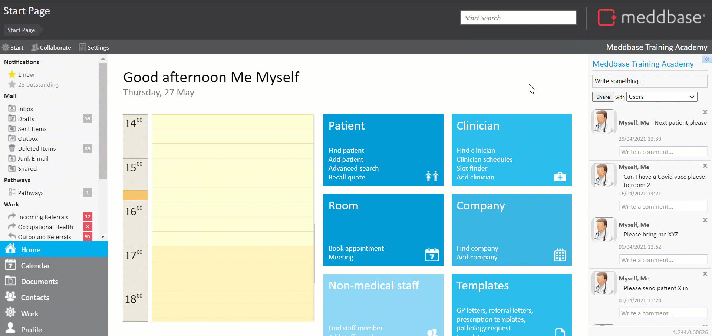
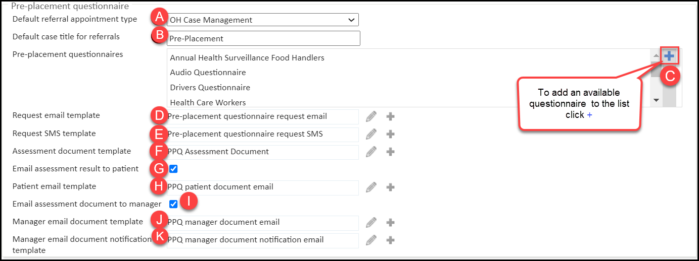

The Pre-Placement Questionnaire (PPQ) system is designed for employers looking to send pre-placement questionnaires* to their employees. Each questionnaire can be configured with certain triggers that, when hit, will feedback a status** to the employer.
* To request a new PPQ please contact Meddbase Support via a support ticket or reach out to your Project Manager or Account Manager.
** The PPQ system specifically hides all the employee’s responses for confidentiality reasons and only exposes the Status to the employer. When requesting a new PPQ, the questions and the answers triggering specific statuses can be defined.
This article will walk you through the process of setting up the PPQ system in your Meddbase chamber.
Furthermore, this article will explore the possible statuses of a questionnaire triggered by the employee's answers and the related consequences.
The PPQ system can be configured in a few simple steps. To do this:-
1. From the Start Page navigate to Admin > Configuration > Online Portal*
* You need to be a System Administrator to access the configuration page.
2. Scroll down to the Pre-placement questionnaire section.

You will see a few settings here, all of which are described below:

Item | Setting | Explanation |
A. | Default referral appointment type | Select the default appointment type for the automatically triggered referral (when further OH advice is required). |
B. | Default case title for referrals | Set a default case title for the automatically triggered referrals. |
C. | Pre-placement questionnaires | This is the list of available PPQs that managers can choose from on the Referral Portal. |
D. | Request email template | This email is sent to the employee with the link to access the questionnaire. Please note: The patient does not need to log in to the Patient Portal. They will be sent a one-time access code on their mobile phone. Click the pencil button on the right to edit the template, or the plus button to create a new one. |
E. | Request SMS template | This text message is sent to the employee, asking them to check their emails and complete the PPQ. |
F. | Assessment document template | This document contains the status of the assessment after the questionnaire is submitted*. Please note: This does not contain any sensitive data such as answers, just the status (outcome) of the PPQ. |
G. | Email assessment result to patient | Choose whether the employee should be emailed a copy of their assessment after the questionnaire is submitted. It will be done via the secure link and require a one-time access code sent to the employee's mobile phone. |
H. | Patient email template | This is the email sent to the employee with the link to access their assessment document securely. |
I. | Email assessment document to manager | Choose whether the manager should be emailed a copy of their employee’s assessment after the questionnaire is submitted. |
J. | Manager email document template | This is the email sent to the manager with the link to access their employee’s assessment document securely. |
K. | Manager email document notification template | This is the email sent to the manager informing them that a new PPQ outcome is available for them on the Referral Portal (no documents shared). |
Pre-Placement Questionnaires, just like any other questionnaires, are bespoke pieces of configuration that need to be built by the Meddbase Solution Engineers Team.
When a new PPQ is requested, questionnaire answers setting particular statuses can be defined*.
* This feature only applies to Pre-Placement Questionnaires and not to any other questionnaire types (e.g. automated Pre-Appointment questionnaires or ones sent via a pathway on demand)
Statuses can be custom, and their description can be different than just Fit/Unfit. However, every status should result in one of the three actions being automatically taken by the system.
Please refer to the table below:-
| System action | Description |
| Document | Generate a document and automatically attach to the patient record. This will most likely be used for auto-generated fitness certificates. Although it can also be used whenever the manager wants to create a document and not automatically refer an employee. |
| Refer | Automatically trigger a referral to the OH Provider. This is used when further OH advice is required. |
| Wait | The questionnaire is completed, but no action is taken from the system. This is used in conjunction with our pathways system, which can start a custom workflow when a specific questionnaire with this status is submitted (completed). This could also be used to have no automated action take place, and instead allow the manager to decide whether to refer or not. |
Statuses on PPQs also have 'numbers' which are used for hierarchy.
Practically in every situation, the Refer action will be assigned to the highest number. This is because a PPQ will take the action that corresponds to its highest status number if any answer triggers it and it will not take any action with a lower number:
e.g. we could have other statuses, such as Wait or Document, set on different answers for other questions